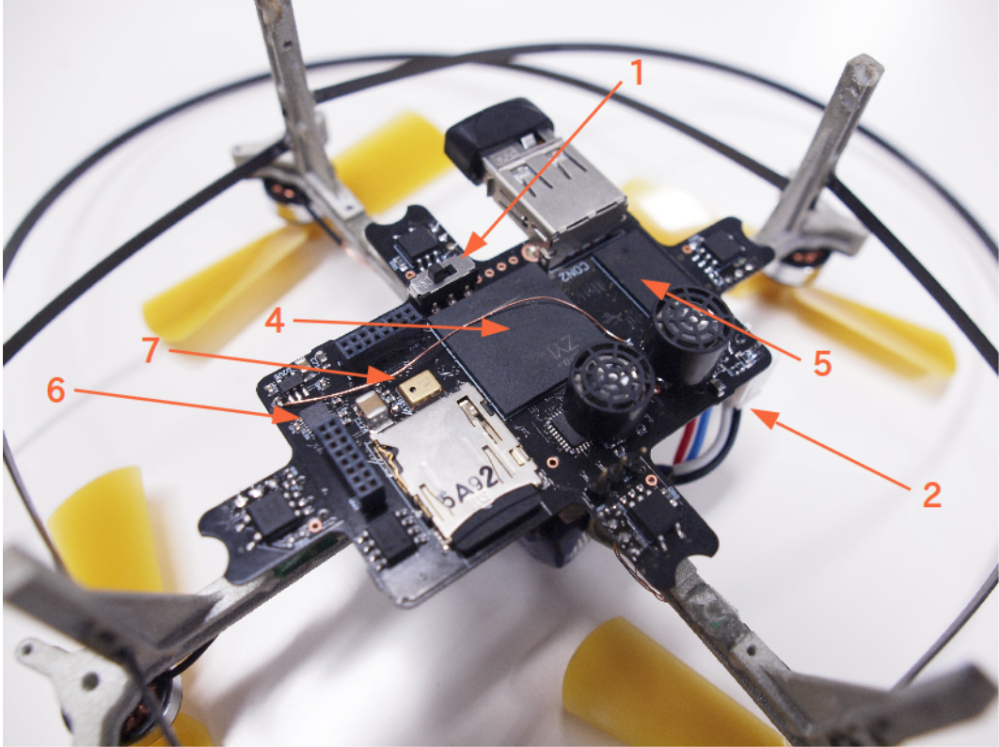
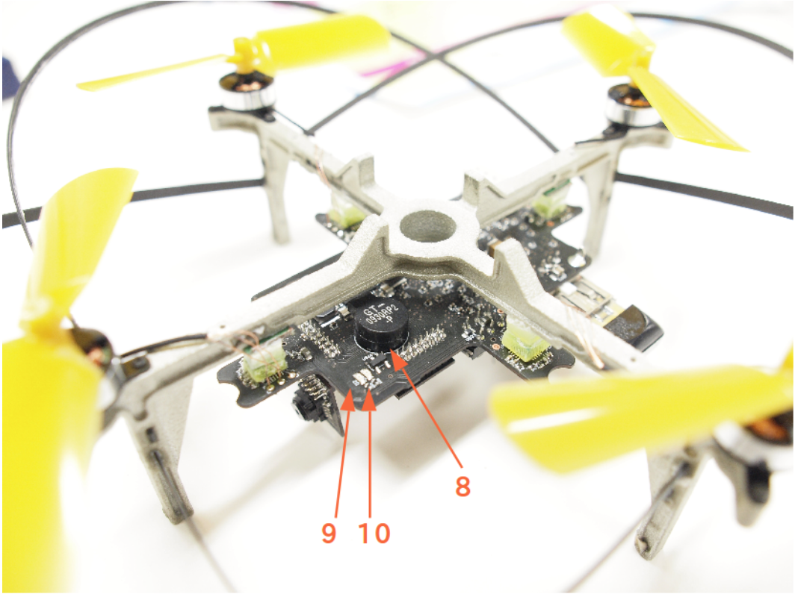
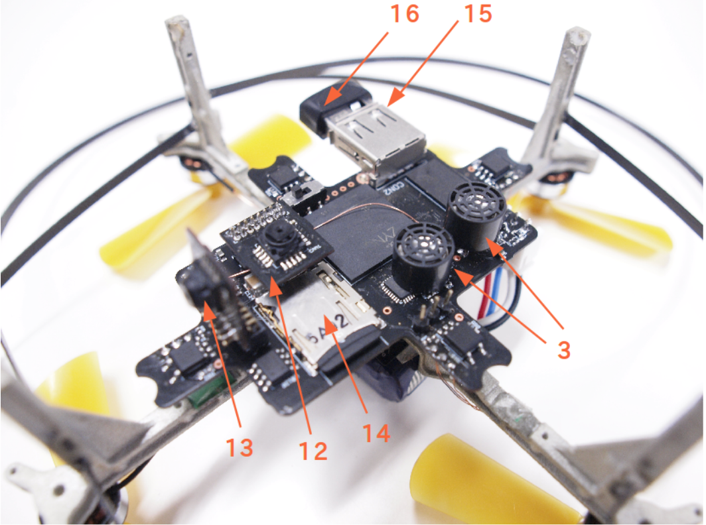
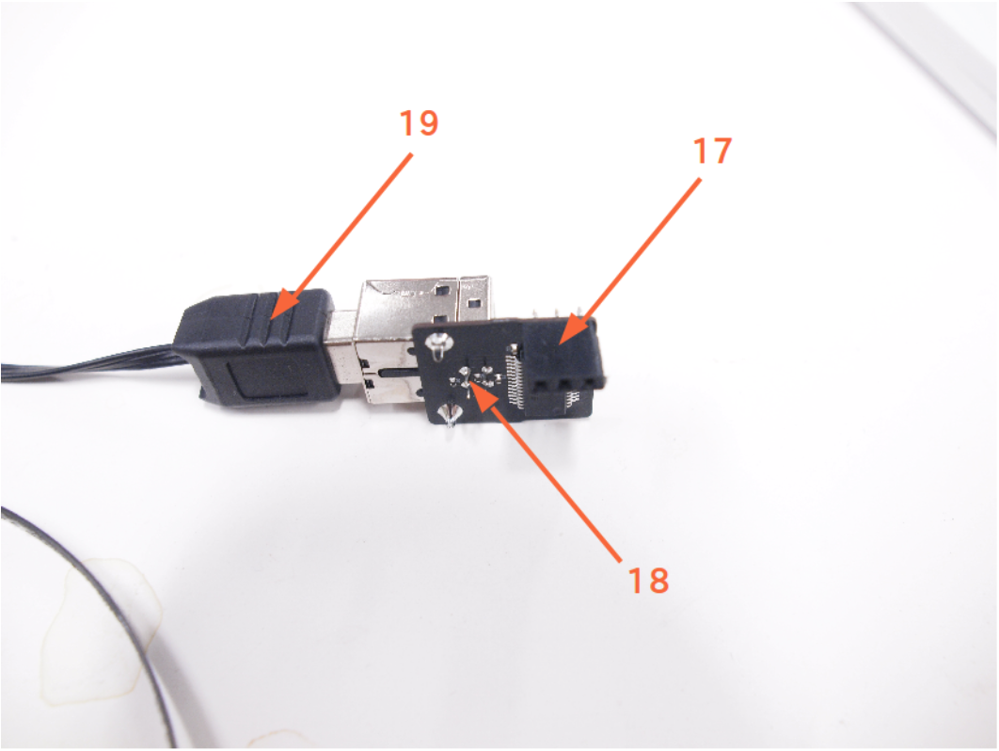

電子回路の構成
Phenox の電子回路は、1 枚のメイン回路、2 枚のカメラ回路、1 枚のシリアル通信回路の 3 種類の回路で構成されています。以下に列挙した部品について、それぞれの位置を図 1, 2, 3 に示します。
- 電源スイッチ
- 電源コネクタ (３セル, JST-XH4)
- 超音波送信機、受信機
- Zynq (XC7Z010CLG400)
- DDR3 メモリ (256MB)
- 姿勢センサ
- マイク
- ブザー
- 汎用 LED0
- 汎用 LED1
- 電源確認用 LED
- 下面カメラ
- 正面カメラ
- Micro SD カードスロット
- USB2.0 ポート
- WiFi モジュール
- シリアル通信回路挿入ポート
- シリアル通信回路
- USB ケーブル (A-B)

図 1 メイン回路下面（カメラ回路なし）

図 2 メイン回路上面

図 3 メイン回路下面（カメラ回路あり）

図 4 シリアル通信回路